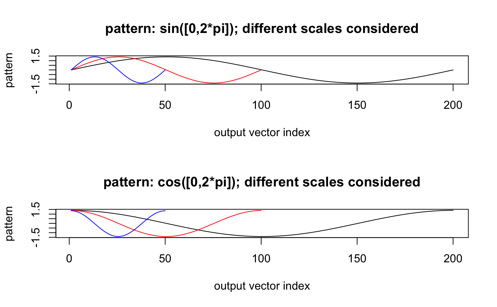

Compute a list of scaled templates via linear interpolation.
scaleTemplate(template, template.vl)
| template | A list of numeric vectors. Each vector represents a distinct template. |
|---|---|
| template.vl | A numeric vector. A grid of vector lengths that each
element of |
A list of lists of numeric vectors.
Each element of the
returned list is a list of templates scaled according
to a particular vector length. The number of elements in the returned
list equals the length of template.vl.
## Construct a list of two templates template <- list(sin(seq(0, 2 * pi, length.out = 100)), cos(seq(0, 2 * pi, length.out = 100))) ## A grid of vector lengths to which each of templates is scaled into template.vl <- c(50, 100, 200) ## Compute list of rescaled templates out <- scaleTemplate(template, template.vl) ## Plot 1st template after rescaling to three values of vector length par(mfrow = c(2, 1), cex = 0.7) plot(out[[3]][[1]], type = "l", main = "Pattern: sin([0, 2 * pi]) rescaled according to different scales", ylab = "Pattern", xlab = "Index") lines(out[[2]][[1]], col = "red") lines(out[[1]][[1]], col = "blue") ## Plot 2nd template after rescaling to three values of vector length plot(out[[3]][[2]], type = "l", main = "Pattern: cos([0, 2 * pi]) rescaled according to different scales", ylab = "Pattern", xlab = "Index")